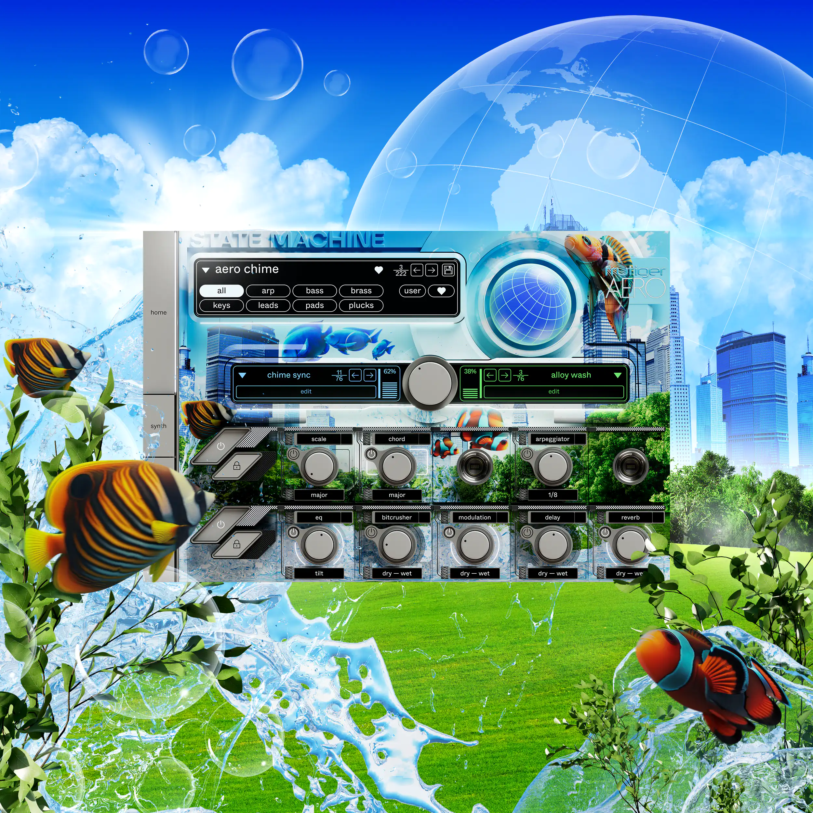

Lixeiras e pontos de coleta
Instalação de lixeiras e pontos de coleta em praias, rios e outras áreas de grande circulação.

Oceano limpo, futuro vivo.
Instalação de lixeiras e pontos de coleta em praias, rios e outras áreas de grande circulação.
Ampliação da coleta seletiva para que mais resíduos sejam reciclados e menos cheguem ao mar.
Organização de mutirões de limpeza com voluntários, escolas e comunidades.
Mais fiscalização e multas para quem descarta resíduos de forma incorreta.
Reduza o uso de plásticos descartáveis, separe o lixo para reciclagem, nunca deixe resíduos na praia e compartilhe essas informações com amigos e familiares.
Um futuro brilhante que podemos construir está em nossas mãos!
